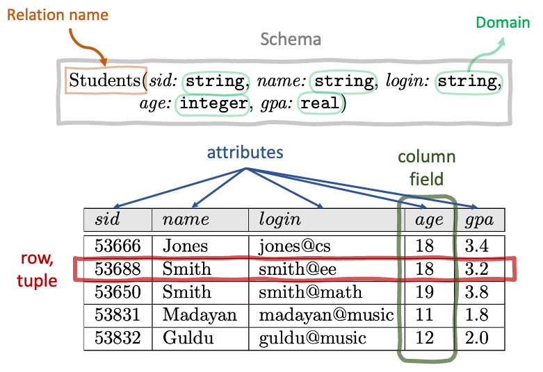

SQL
Relational Databases
Introduction
- What is a database?
- Organized collection of related data
- What is a database management system (DBMS)?
- Collection of programs that enables users to create and maintain a database
- allows users to create, query, modify, and manage
DATABASE != DBMS
Using a DBMS ensures:
- Efficiency: Data is stored efficiently.
- Integrity: Data is consistent and correct.
- Security: Data is safe from unauthorized access.
- Concurrent Access: Multiple users can access the same data at the same time.
- Crash Recovery: Data is safe from crashes.
- Independence: Data is independent of the programs that use it.
Relational Data Model
- Works with entities and relationships
- Entity: a thing or object in the real world that is distinguishable from other objects
- e.g. students in a school
- Relationship: an association among entities
- e.g. a student is enrolled in a course
Relational Database: A collection of relations.
- A relation is an instance of a relation schema (just like an object was an instance of a class!)
- Relation Schema specifies:
- Name of a relation
- Name and domain of each attribute
- Domain: A set of constraints that determines the type, length, format, range, uniqueness and nullability of values stored for an attribute.

Query language in a DBMS
- Query: A question that we ask about the data. The result of a query is a new relation.
- Structured Query Language (SQL): A programming language taht we use to talk to a relational DBMS. SQL != relational model != database != DBMS SQL is a standard language for storing, manipulating and retrieving data in databases.
- The data query language(DQL) is part of a bigger set of languages for working with data in a realational database, which consists of:
- Data Definition Language (DDL) for creating, altering and deleting tables.
- Data Manipulation Language (DML) for inserting new data, updating values, etc.
- Data Query Language (DQL) for quering and retrieving data.
- Data Control Language (DCL) for management and controlling user access, rights and privileges.
PostgreSQL
- It is an open-source, cross-platform DBMS that implements the relational model.
psql: PostgreSQL’s interactive command-line interface
| Command | Usage |
|---|---|
\l |
List all databases |
\c |
Connect to a database |
\d |
Describe tables and views |
\dt |
List tables |
\dt+ |
List tables with additional info |
\d+ |
List tables and views with additional info |
\! |
Execute shell commands |
\cd |
Change directory |
\i |
Execute commands from a file |
\h |
View help on SQL commands |
\? |
View help on psql meta commands |
\q |
Quit interactive shell |
Note that you don’t need to terminate meta commands with ;.
SQL commands:
The order of SQl clauses:
- SELECT
- FROM
- WHERE
- ORDER BY
- LIMIT
Data types:
How we convert values from one type to another. In standard SQL, type conversion can be done using the
CASTfunction:CAST(<column> AS <data_type>). In Postgres, we can also use the double-colon syntax as a shorthand for the aboveCASTfunction:<column>::<data_type>.Boolean,
BOOLEANorBOOL- True:
TRUE,t,true,y,yes,YES,Y,T,1(or any other positive integer) - False:
FALSE,0,NO,N,F
- True:
Characters
CHAR(n): a string of exactlyncharacters padded with spaces.VARCHAR(n): a variable set ofncharacters.TEXT: Postgres specific type for which there is practically no limit on the number of characters.
DateTime: date and time
DATE: date (YYYY-MM-DD)CURRENT_DATE: current date
TIME: timeTIMESTAMP: date and timeTIMESTAMPTZ: date and time with timezone
Binary: binary data
Numbers:
Integers
| Name | Storage Size | Description | Range |
|---|---|---|---|
smallint |
2 bytes | small-range integer | -32,768 to +32,767 |
integer |
4 bytes | typical choice for integer | -2,147,483,648 to +2,147,483,647 |
bigint |
8 bytes | large-range integer | -9,223,372,036,854,775,808 to +9,223,372,036,854,775,807 |
serial |
4 bytes | auto-incrementing integer | 1 to 2,147,483,647 |
bigserial |
8 bytes | large auto-incrementing integer | 1 to 9,223,372,036,854,775,807 |
- Floating-point numbers
| Name | Storage Size | Description | Range |
|---|---|---|---|
real |
4 bytes | variable-precision, inexact | at least 6 decimal digits (implementation dependent) |
double precision |
8 bytes | variable-precision, inexact | at least 15 decimal digits (implementation dependent) |
- Arbitrary precision numbers
| Name | Storage Size | Description | Range |
|---|---|---|---|
numeric or decimal |
variable | user-specified precision, exact | 131072 digits before and 16383 digits after the decimal point |
Note:With the numeric data type, we can specify the total number of significant digits to store (known as precision) as well as the number of digits in the fractional part (known as scale) by specifying NUMERIC(precision, scale):SELECT CAST(‘183.123456789’ AS NUMERIC(5, 2)); 183.12
- Date/time:
DATE: dates (YYYY-MM-DD)TIME: the time of dayTIMESTAMP: date + timeTIMESTAMPTZ: date + time + timezoneIntervals: storing intervals of time'3 years 2 months 23 hours 8 minutes 18s'::INTERVAL1155 days, 23:08:18
Nulls
A null is marker to indicate that the value for a column is unknown, or not entered yet.A null is not equal to 0, or an empty string. In fact, a null is not even equal to another null!
How different environments show nulls:
- ipython-sql -> None
- psql -> blank space
- pgAdmin -> [null]
WHERE
| Condition Example | Description |
|---|---|
WHERE column = value |
Equals; returns true if the column equals the value. |
WHERE column <> value |
Not equals; true if the column is not equal to value. |
WHERE column > value |
Greater than; true if the column is more than value. |
WHERE column < value |
Less than; true if the column is less than value. |
WHERE column BETWEEN value1 AND value2 |
True if the column is within the range of value1 and value2. |
WHERE column [NOT] IN (value1, value2, ...) |
True if the column is [NOT] equal to any of multiple values. |
WHERE column [NOT] LIKE pattern |
True if the column [NOT] matches the SQL pattern. |
WHERE column IS [NOT] NULL |
True if the column is [NOT] NULL. |
Note that in SQL, strings are enclosed in single quotes, i.e. ‘string’.
While SQL syntax is case-insensitive, string comparisons in SQL can be case-sensitive depending on the database system and collation settings. For example, in some systems, ‘Lost highway’ will not return any rows if the actual data is ‘Lost Highway’.